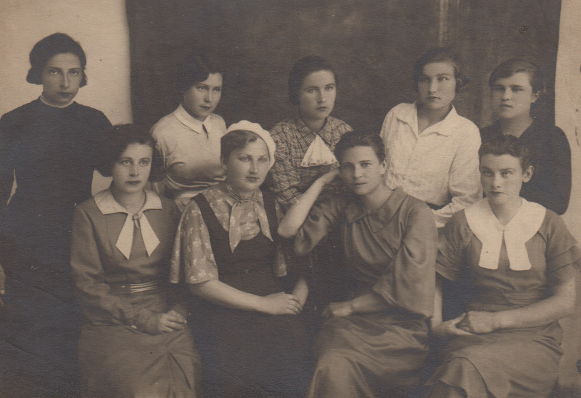
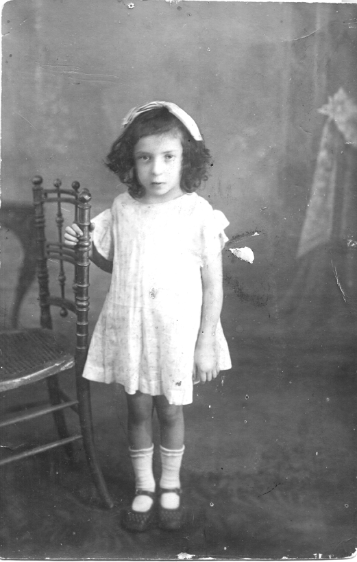
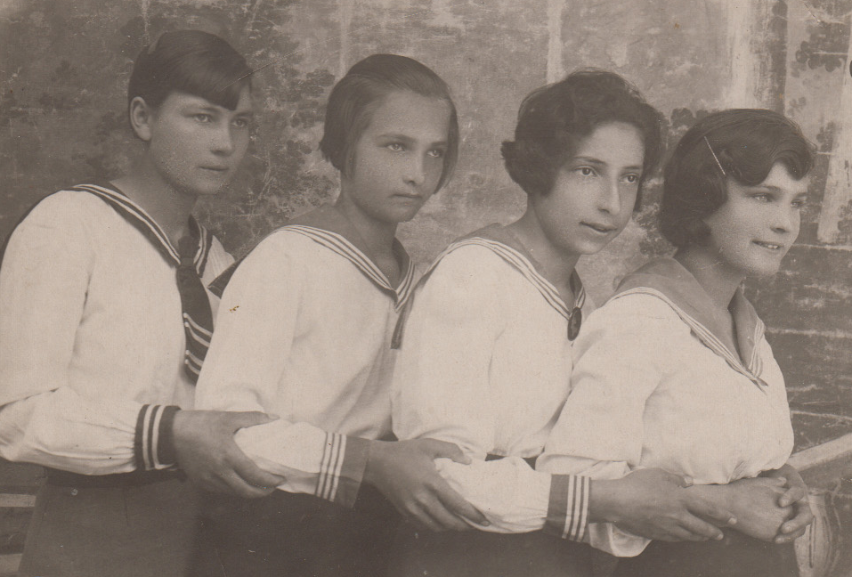
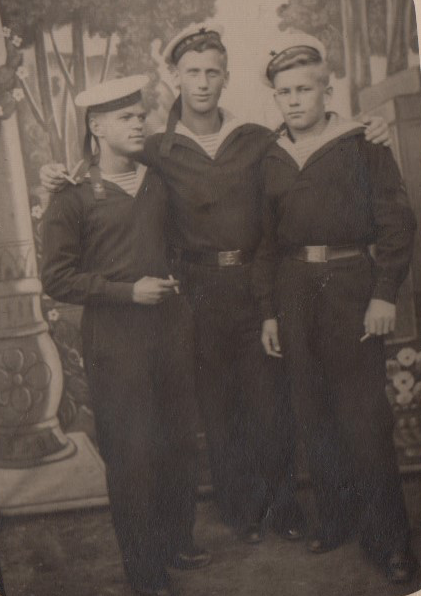

Дина Михайловна Басс, моя единственная и горячо любимая тетя, родилась в 1920, за 20 лет до моего рождения, но это не помешало нам всю жизнь любить друг друга, жить от встречи до встречи и быть близкими подругами.
Она родилась в Казалинске, а после войны всю жизнь провела в Орске, на Южном Урале. Меня же судьба бросала, как перекати-поле: Западный Урал – Карелия – Поволжье - Белгородщина – Крым… Всего не перечислишь. Но при первой же возможности я ехала к Дине… С ней было интересно. Она была очень эрудированным, веселым и необыкновенно остроумным человеком, ее уважали и любили сослуживцы. После учительства она работала в книжном издательстве и где-то еще, я не помню. Но я видела людей, которые ее навещали, когда по состоянию здоровья она уже не работала – это был фейерверк юмора и веселья.

Она была учителем русского языка и литературы. Она была хорошим учителем, я поняла это по письмам ее повзрослевших учениц. И я в 5 классе (в этом году мы жили у нее в коммуналке в ожидании квартиры в новом городе) решила тоже стать учительницей, но только литературы (преподавать русский язык мне тогда казалось скучным).
У нас с мамой было много Дининых фотографий, но они в альбомах, сканировать трудно, так что, простите, какие есть… Это она в детстве.

После окончания школы в 1938 году Дина работала в библиотеке и старшей вожатой, потом махнула с подругами в Ленинград, в ЛИЖТ… В дороге цыганка нагадала: «Если упустишь свое счастье, никогда не найдешь». Посмеялись они с девчонками и забыли. А жизнь напомнила, и очень скоро.

Первую любовь свою Дина встретила в Ленинграде. Володя Горбоконь, закончивший институт с красным дипломом и получивший распределение в Иркутск, перед отъездом провел с Диной и ее подругами и 20 июля - проводы белых ночей в Петродворце, и 4 августа – день железнодорожника… Когда были в ресторане, в парке на Васильевском острове, дядя Иван (дядя Володи) сказал Дине: «Это счастье – один раз в жизни…». Но пришло письмо из дома: у мамы – бруцеллез… Вернулась домой.
Во время войны сбежала с девчонками на фронт. Добрались до Свердловска. Их взяли в санпоезд. Под Москвой разбомбили… Голодали, мерзли (с ногами всю жизнь потом мучилась, в последние годы даже из дома не выходила)… Вернулись на переформирование в Свердловск. Дине и одной из подруг сказали: или госпиталь, или домой. Вернулась домой, а там – строгий спрос по военному времени за самовольный уход с работы... Спас секретарь райкома – казах, по-отечески добрый…
Потом в ее жизни появился он - Леонид Петрович Шершнев, донской казак из Армавира. Военно-морской Черноморский флот, Севастополь. Их было четверо друзей, командир – Натан Явич. Осенью 1942 после курсов младших командиров в Кзыл-Орде их направили под Москву…Перед отъездом Леня оставил кое-какие вещи, чтобы передать близким, если не вернутся… Ни один не вернулся. Все письма возвращались со штемпелем «Вручить невозможно». Дина бережно хранила их, пыталась кого-нибудь найти – не удалось. Передала мне… Я тоже никого не нашла… Передаю внучке – по молодости лет она уверена, что вручит кому следует…

В 1946 по вызову «мужа» перебралась в Орск, через несколько месяцев вызвала родителей. За Диной ухаживал директор школы – кореец, грамотный, подтянутый, красиво одетый… (так она мне его описала), но выйти замуж за корейца Дине не разрешила ее мама – нечего разводить интернационал…
Так и осталась она без семьи, без детей, любимая друзьями, соседями и родственниками…

Алла Басс (Дворжицкая-Ларина).